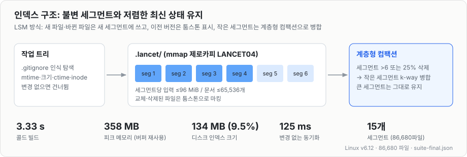

LANCET04 트라이그램 LSM 인덱스와 최신성 모델
상주 데몬 없이도 40바이트 헤더 O(1) mmap과 racy-timestamp 방어로 Scan == Auto를 보장하는 원리.
백그라운드 워처가 따라잡기를 기다리거나 인덱스 캐시만으로 근사 결과를 돌려주는 도구와 달리, Lancet은 데몬 없는 불변 LSM 트라이그램 인덱스(LANCET04) 위에서 단 하나의 불변식 Scan == Auto를 보장합니다.

"spin_lock" auto 모드 실측: 7,814개만 열어(9.1%) 7,073개(8.2%) 정확히 일치.건전한 트라이그램 컴파일#
리터럴, 정규식 HIR 분기, AST 리터럴, refs --rank 글롭 리터럴은 필수 바이트 트라이그램 논리식으로, fuzzy()는 건전한 q-gram 하한 AtLeast(k)로 컴파일됩니다. 필수 트라이그램이 없는 파일은 논리적으로 매치할 수 없으므로 건너뛰어도 누락이 0건이며, 남은 모든 후보는 풀스캔과 완전히 동일한 평가기로 검증됩니다.
디스크 LANCET04 바이너리 구조 & 제로카피 mmap#
PATH/.lancet(또는 상위 디렉터리 자동 탐색, --index-dir로 변경 가능) 안에 manifest.json과 불변 세그먼트(seg-NNNNNN.wseg)가 저장됩니다:
header (40 B): "LANCET04" | ndocs:u32 | nkeys:u32 | doc_offs_off:u64 | keys_off:u64 | post_off:u64
doc_offs: (ndocs + 1) * u32 오프셋 (docs_off 기준)
docs: 문서별(상대 UTF-8 순): mtime_ns:u64 | size:u64 | ctime_ns:u64 | ino:u64 | flags:u8 | rel_utf8
keys: nkeys * (key:u32 | off:u32) + sentinel_end_off:u32 (트라이그램 키 순 정렬)
postings: varint(count) + delta-varint 문서 IDSegment::open은 40바이트 헤더만 검사하므로 파일 수와 무관하게 힙 할당 0, O(1)으로 열립니다. 문서별 플래그는 FLAG_BINARY(1), FLAG_ERROR(2), FLAG_OVERSIZE(4, > 64 MiB — 쿼리 시 mmap 스트리밍), FLAG_RACY(8)를 기록합니다.
4종 메타데이터 + Racy-Timestamp 방어#

왜 (mtime, size)만으로는 불충분할까요? cp -p, tar, 같은 길이 수정은 둘 다 그대로 둘 수 있습니다. Unix/macOS에서 Lancet은 (mtime_ns, size, ctime_ns, ino) 4가지를 모두 기록하고 Git의 racy-timestamp 창을 적용합니다:
- 적응형 racy 창: 최대 4,096개 파일의 나노초 타임스탬프를 표본 검사해, 세밀한 파일시스템(APFS, ext4, NTFS)에서는
100 ms, 거친 타임스탬프(HFS+, ext3, FAT)에서는2 s창 안에 들어온 파일에FLAG_RACY를 찍어 캐시를 믿지 않고 항상 라이브 검증합니다.
Windows에서 Rust 표준 라이브러리는 mtime과 size만 안정적으로 노출합니다(ctime_ns, ino는 0). 따라서 Windows에서 파일 크기와 mtime을 함께 유지한 채 덮어쓰는 경우 lancet index 또는 --no-index를 실행해야 합니다.
동작 모드, 증분 동기화 & 자동 컴팩션#
auto(기본값): 메타데이터 stat 순회(8.7만 파일 약 100 ms) + 바뀐 파일만 라이브 스캔.--trust-index: stat 순회를 생략하고.lancet만 신뢰(Linux 커널 약 40 ms, 0건 시 2~3 ms);lancet index전의 미반영 수정은 누락될 수 있습니다.--no-index: 인덱스를 무시하고 디스크 전체를 직접 스캔합니다.- LSM 컴팩션: 증분
lancet index는 새 세그먼트와 삭제 툼스톤을manifest.json.tmp원자적 rename으로 반영합니다. 세그먼트가COMPACT_MAX_SEGMENTS = 6을 넘거나 죽은 문서가COMPACT_MIN_DEAD = 32이상이면 자동 병합하며--compact/--rebuild로 수동 실행도 가능합니다.